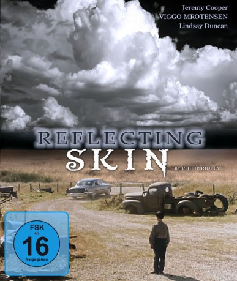

#10166 Schrei in der Stille
Alternativ: The Reflecting Skin (Englischer Titel)
 
 IMDB-Wertung: 7.0 / 10
IMDB-Wertung: 7.0 / 10  Metascore: 0
Metascore: 0 
Der Film beginnt vorerst in idyllischer Umgebung. Seth Dove und seine beiden Freunde Eben und Kim wandern durch goldene Weizenfelder und bewundern einen soeben gefundenen großen Frosch. In ihrer kindlichen Unschuld nehmen die Jungen einen Strohhalm, um den Frosch aufzublasen, legen diesen auf den Rücken in die Mitte des Weges. Als sich Dolphin Blue, die Nachbarin der Familie Dove, nähert, schießen sie auf ihn mit einer Steinschleuder, Dolphin über und über mit seinem Blut bespritzend.
Jahr: 1990
Dauer: 95 Minuten
FSK: 16
Land: England Studio: atlas FilmTonspuren: DD5.1 - ,
Untertitel:
Auflösung: 1080p (1920x1080) Größe: 8140 MB
Genre: Thriller, Horror, Drama
Regisseur: Philip Ridley
Drehbuch: Philip Ridley
Soundtrack: Nick Bicât
Darsteller:
 Viggo Mortensen als Cameron Dove
Viggo Mortensen als Cameron Dove Lindsay Duncan als Dolphin Blue
Lindsay Duncan als Dolphin Blue- Jeremy Cooper als Seth Dove
- Sheila Moore als Ruth Dove
 Duncan Fraser als Luke Dove
Duncan Fraser als Luke Dove David Longworth als Joshua
David Longworth als Joshua- David Bloom als Deputy
- Guy Buller als Passenger
- Joyce Robbins als Twin
- Jacqueline Robbins als Twin
- Robert Koons als Sheriff Ticker
- Evan Hall als Kim
- Codie Lucas Wilbee als Eben
- Sherry Bie als Cassie
- Jason Wolff als Cadillac Driver
- Dean Hass als Passenger
- Jason Brownlow als Passenger
- Jeff Walker als Adam Blue
- Debi Greenawdt als First Woman
- Sandra Redmond als Second Woman
- Walt Healy als Old Man
Datei: X:\1990\Schrei in der Stille (1990, FSK16, 1920x1080).mkv seit 13.12.2018
Festplatte: HD 1987-1991
 Es gibt insgesamt 52 Filme in der Gruppe '1990'
Es gibt insgesamt 52 Filme in der Gruppe '1990'